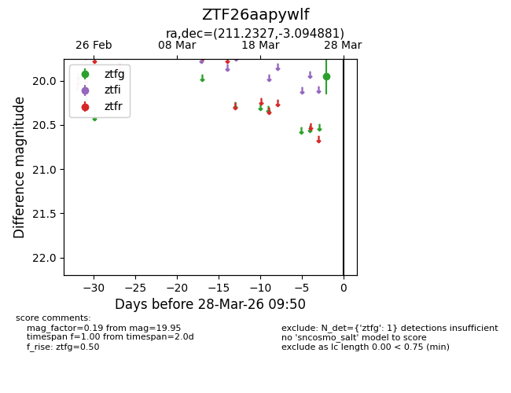
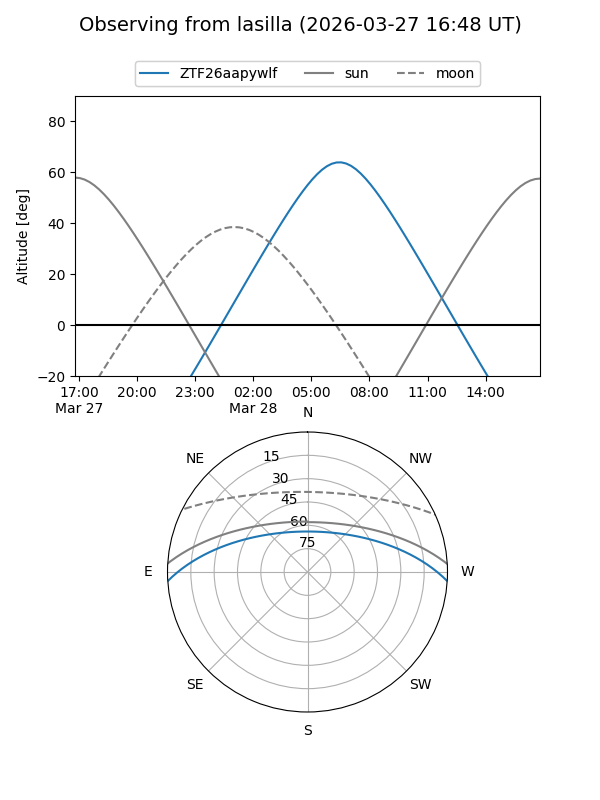
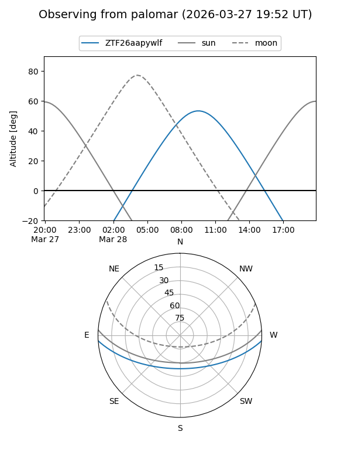

ZTF26aapywlf
Target ZTF26aapywlf at 2026-03-28 09:53
Aliases and brokers:
FINK: link
Lasair: link
ALeRCE: link
alt names
ZTF26aapywlf (ztf,fink_ztf)
Coordinates:
equatorial (ra, dec) = 211.2327,-3.09488
equatorial (HMS+DMS) = 14:04:55.85,-03:05:41.57
galactic (l, b) = (336.1769,+54.96178)
Flags:
Photometry:
last ztfg=19.95
1 ztfg detections
Lightcurve

Visibility


Additional plots